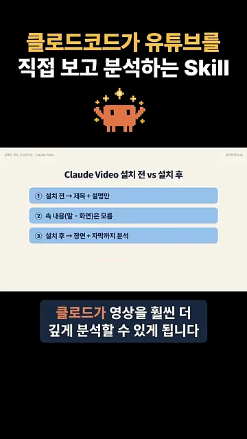
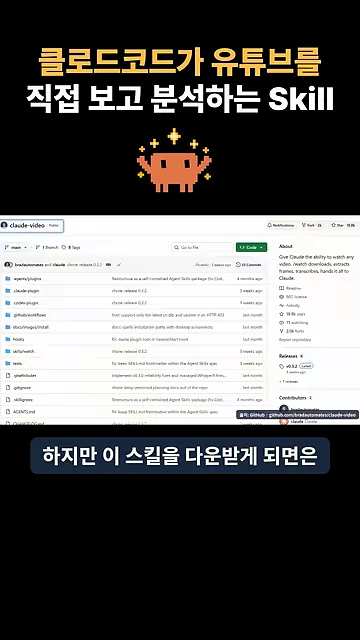
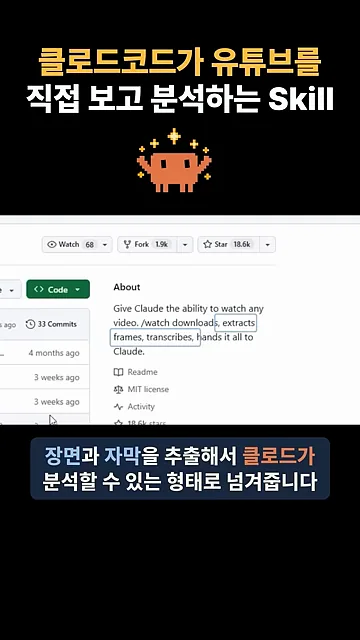
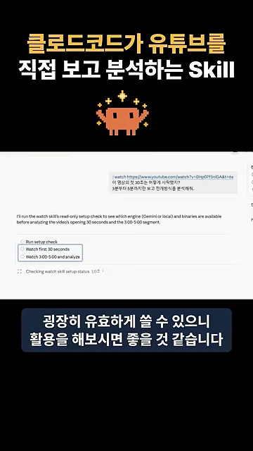

링크만 주면 클로드는 뭘 알까요?
평소처럼 클로드 대화창에 유튜브 링크를 붙여 넣으면, 클로드가 알 수 있는 건 영상 제목과 설명란 정도예요. 영상 안에서 누가 무슨 말을 하는지, 화면에 어떤 장면이 나오는지는 전혀 몰라요. 그래서 "첫 30초는 어떻게 시작했지?" 같은 질문에는 제대로 답하지 못해요.
영상은 이 차이를 슬라이드 한 장에 세 줄로 정리해요. ①번과 ②번이 스킬을 깔기 전 상태예요. 제목과 설명만 보이고 속 내용(말·화면)은 몰라요. ③번이 깐 뒤의 상태로, 장면과 자막까지 분석할 수 있어요.

슬라이드 글씨가 작아서 표로 다시 옮기면 이래요.
| 클로드가 볼 수 있는 것 | 스킬 설치 전 | 스킬 설치 후 |
|---|---|---|
| 제목·설명 | 보여요 | 보여요 |
| 영상 속 말 | 몰라요 | 자막으로 읽어요 |
| 화면에 나온 장면 | 몰라요 | 장면 이미지로 봐요 |
Claude Video 스킬이 하는 일
영상이 '이 스킬'이라며 보여 주는 건 GitHub 저장소 bradautomates/claude-video예요. 슬라이드에서는 Claude Video라고 부르고, 실제로 쓰는 명령은 /watch예요. 화면 오른쪽 아래에 출처 주소가 함께 적혀 있어요.

이어서 화면은 오른쪽 About 칸을 확대해요. 소개 문구 'Give Claude the ability to watch any video'는 '클로드가 어떤 영상이든 볼 수 있게 해 준다'는 뜻이에요. 그 뒤 문장에서 downloads, extracts frames, transcribes, hands it all to Claude 부분에 차례로 테두리가 쳐져요. 내려받고, 프레임을 뽑고, 말을 글로 옮기고, 클로드에게 넘긴다는 네 동작이에요.

발표자가 말로 설명한 흐름을 그림으로 옮기면 이래요. 링크를 주면 스킬이 영상을 자동으로 내려받고, 거기서 장면과 자막을 따로 뽑아요. 클로드는 이렇게 그림과 글로 바뀐 영상을 받아서 분석해요.
어디에 쓰나요 — 인트로 기획과 벤치마킹
발표자는 유튜브 인트로를 기획할 때 이 스킬을 자주 쓴다고 해요. 마지막 데모 화면에서 그 쓰임새가 보여요. 오른쪽 위 말풍선에 /watch와 유튜브 링크를 넣고 두 가지를 물어요. "이 영상의 첫 30초는 어떻게 시작했지?"와 "3분부터 5분까지만 보고 전개방식을 분석해줘"예요.
그 아래에서 클로드는 바로 답하지 않고 계획부터 세워요. 먼저 스킬 설정 상태를 확인하고(Run setup check), 첫 30초를 본 다음(Watch first 30 seconds), 3:00–5:00 구간을 보고 분석하겠다는 세 단계예요.

잘 되는 영상의 도입부나 흐름을 참고하는 벤치마킹을 자주 한다면 꽤 쓸모 있을 거라는 게 발표자의 마무리예요.